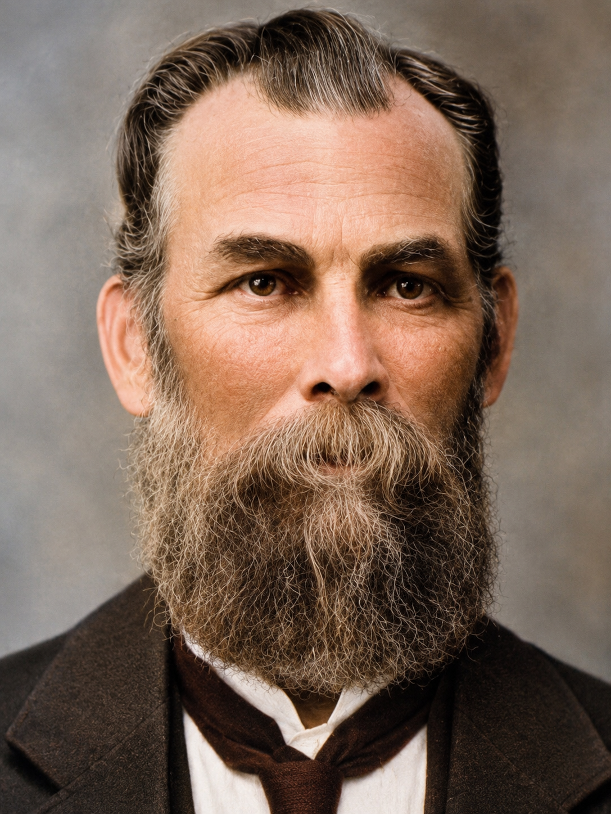

Freestone family · Person
George Freestone
1838–1920

- Born
- August 13, 1838 · Prince Edward Island, Canada
- Died
- August 24, 1920 · Utah (family research)
George appears in the 1853 traveling group. The county history reportedly lists a George Freestone among bishops associated with the early Uintah Stake and names a man of that name among those present at the 1888 Co-op robbery. The robbery identification remains provisional. A family history lists four children with Alice Jane Carlisle and eleven with Eraimine Georgine Lind. FamilySearch’s current vital dates are August 13, 1838, and August 24, 1920. Its pasted family narrative contains other dates; these remain recorded as discrepancies. He married Alice Carlisle on December 24, 1861, in Alpine and Eraimine Georgine Lind on August 12, 1872, in Salt Lake City.
Family connections
Parents Ann Fall, Thomas Freestone
Grandparents Ann Youngman, Elizabeth Rowston, George Freestone, James Fall
Spouses and partners Alice Jane Carlisle, Eraimine Georgine Lind
Children with Alice Jane Carlisle: Alice Jane Freestone, Esther Drucilla Freestone, Mary Elizabeth Freestone, Rhoda Eliza Freestone
Children with Eraimine Georgine Lind: Charles Royal Freestone, Clarence Betts Freestone, Emery Lind Freestone, Emma Zina Freestone, George Oscar Freestone, Georgiana Maria Freestone, James Anton Freestone, Louis Alonzo Freestone, May Afton Freestone, Reuben Thomas Freestone, Rosella Caroline Freestone
Stepchildren Jeannette Young Wilkin, Jedediah Grant Wilkin, Richard Joseph Carlisle
Siblings Elizabeth Ann Freestone (Full sibling) · Emma Sarah Freestone (Full sibling) · George Hodnett (Half-sibling) · James Fall Freestone (Full sibling) · Jane Marie Freestone (Full sibling) · Johanna Freestone (Full sibling) · Phoebe Ellen Freestone (Full sibling) · Rhoda Francis Freestone (Full sibling)
Relationship evidence
- Marriage · Alice Jane Carlisle · Documented in family history
- Event date
- 1861-12-24
- Place
- Alpine, Utah
Sources · George Freestone and his wives · FamilySearch profile · George Freestone (1838–1920)
- Marriage · Eraimine Georgine Lind · Documented in family history
- Event date
- 1872-08-12
- Place
- Salt Lake City, Utah
Sources · George Freestone and his wives · FamilySearch profile · Eraimine Georgine Lind (1855–1936)
- Child · Alice Jane Freestone · Documented in family history
Sources · George Freestone and his wives
- Child · Mary Elizabeth Freestone · Documented in family history
Sources · George Freestone and his wives
- Child · Rhoda Eliza Freestone · Documented in family history
Sources · George Freestone and his wives
- Child · Esther Drucilla Freestone · Documented in family history
Sources · George Freestone and his wives
- Child · George Oscar Freestone · Documented in family history
Sources · George Freestone and his wives · FamilySearch profile · Eraimine Georgine Lind (1855–1936)
- Child · Georgiana Maria Freestone · Documented in family history
Sources · George Freestone and his wives · FamilySearch profile · Eraimine Georgine Lind (1855–1936)
- Child · Rosella Caroline Freestone · Documented in family history
Sources · George Freestone and his wives · FamilySearch profile · Eraimine Georgine Lind (1855–1936)
- Child · James Anton Freestone · Documented in family history
Sources · George Freestone and his wives · FamilySearch profile · Eraimine Georgine Lind (1855–1936)
- Child · Emma Zina Freestone · Documented in family history
Sources · George Freestone and his wives · FamilySearch profile · Eraimine Georgine Lind (1855–1936)
- Child · Louis Alonzo Freestone · Documented in family history
Sources · George Freestone and his wives · FamilySearch profile · Eraimine Georgine Lind (1855–1936)
- Child · Reuben Thomas Freestone · Documented in family history
Sources · George Freestone and his wives · FamilySearch profile · Eraimine Georgine Lind (1855–1936)
- Child · Emery Lind Freestone · Documented in family history
Sources · George Freestone and his wives · FamilySearch profile · Eraimine Georgine Lind (1855–1936)
- Child · Charles Royal Freestone · Documented in family history
Sources · George Freestone and his wives · FamilySearch profile · Eraimine Georgine Lind (1855–1936)
- Child · May Afton Freestone · Documented in family history
Sources · George Freestone and his wives · FamilySearch profile · Eraimine Georgine Lind (1855–1936)
- Child · Clarence Betts Freestone · Documented in family history
Sources · George Freestone and his wives · FamilySearch profile · Eraimine Georgine Lind (1855–1936)
- Stepchild · Jeannette Young Wilkin · Documented in family history
Sources · George Freestone and his wives
- Stepchild · Jedediah Grant Wilkin · Documented in family history
Sources · George Freestone and his wives
- Stepchild · Richard Joseph Carlisle · Documented in family history
Sources · George Freestone and his wives
- Parent · Thomas Freestone · Reported by FamilySearch
- Parent · Ann Fall · Reported by FamilySearch
Places Prince Edward Island, Vernal, Utah
Timeline The Freestones travel with the Miller and Cooley company
Stories The Freestone Story
Research questions Identify George Freestone in the 1888 holdup account · Check George Freestone’s ward assignment · Verify early Freestone household rosters · George and Jennie’s conflicting narrative dates
Sources · Family research brief · Thomas Freestone’s 1853 company record · George Freestone and his wives · A History of Uintah County: Scratching the Surface · FamilySearch profile · George Freestone (1838–1920) · FamilySearch profile · Ann Fall (1814–1888)